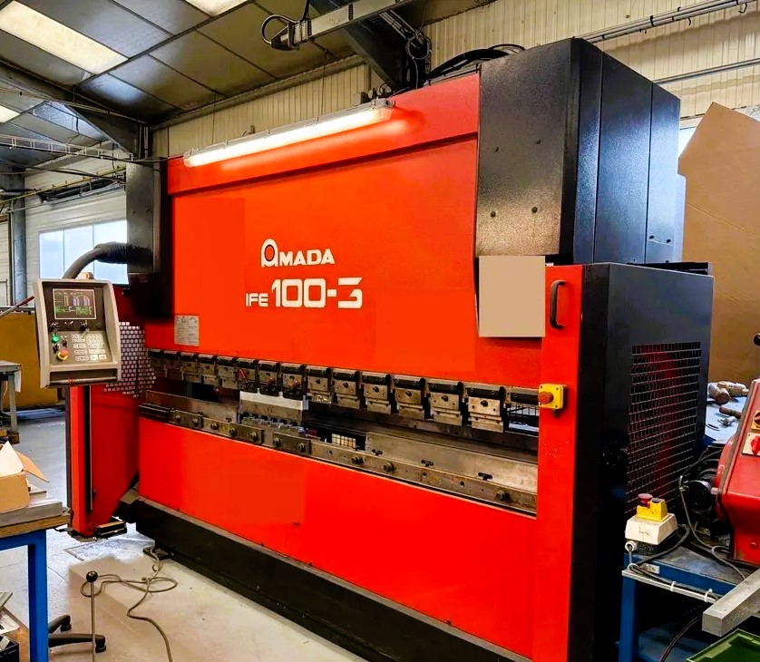
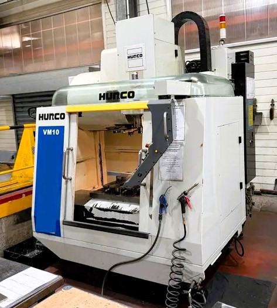
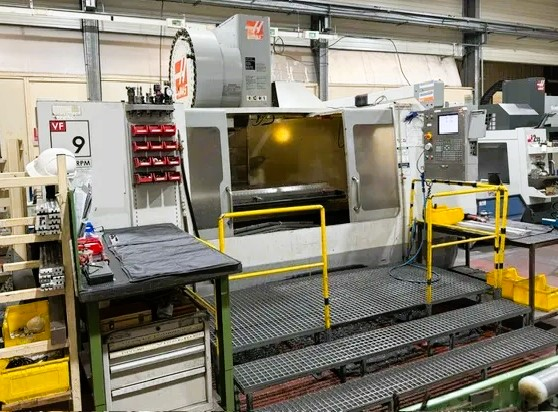

Spécialiste du rachat et de la vente de machines industrielles d’occasion, AMPS vous accompagne dans toutes les étapes de la gestion de vos équipements. Nous intervenons sur un large éventail de machines, quelle que soit leur typologie ou leur secteur d’activité.
Notre engagement : vous proposer des solutions sur mesure, adaptées à vos besoins spécifiques et à vos délais. Grâce à une estimation rapide par photos en 24 à 48 heures et une planification d’enlèvement réactive, nous mettons tout en œuvre pour simplifier et accélérer vos démarches.
Chez AMPS, nous reprenons vos équipements sans exigence de garantie. Nous prenons en charge l’ensemble du processus : démontage, manutention, chargement, transport… Aucune contrainte pour vous. Le paiement intégral est effectué avant l’enlèvement, pour une transparence et une sécurité totales.
Notre priorité est votre sérénité et de travailler sur le long terme ensemble. Faites confiance à un partenaire engagé, qui respecte ses engagements et valorise au mieux vos équipements.
Contactez-nous dès aujourd’hui pour une évaluation rapide et sans engagement.
Nos Machines en Vente
"Machine 1" />
Presse Plieuse AMADA HFE 100-3
Longeur : 3000mn
Force : 100 Tonnes
Année 2001
en très bon état toujours en fonctionnement
Visible en production, vidéo disponible
Avec outillage
En très bon état
Fournis avec outillage documentation
En état de marche bon état
Prix: 21 000€
"Machine 1" />
Centre d’usinage Vertical Hurco VM10
Année 2011
Toujours en fonctionnement
Visible sous tension, vidéo disponible
En très bon état
Fournis avec outillage documentation
En état de marche bon état
Prix: 15 000€
"Machine 1" />
Centre d’usinage HAAS VF-9
Chargeur 40 outils
Double convoyeur à copeaux
Année 2006
En bon état toujours en fonction
Visible en fonctionnement
Vidéo disponible
En très bon état
Fournis avec outillage documentation
En état de marche bon état
Prix: 25 000€
Nous vous proposons le rachat de tout type de matériel industriel d’occasion, dans l’état où il se trouve.
Groupes électrogènes
Transformateurs
Groupe froid
Turbines
Motopompe
Machines-outils
Machine à bois,Alu,PVC
Matériel de travaux publics (TP)
Levage chariot élévateur Nacelles
Véhicules utilitaires et de société
Je rachète ces équipements sans garantie de votre part. Pour faciliter la transaction, je prends en charge le démontage, la manutention, le chargement et le transport.
Nous nous occupons de tout
Pour toute évaluation, merci de m’envoyer quelques photos et informations par email. Je me déplace dans toute la France pour évaluer vos besoins.
N’hésitez pas à me contacter pour toute question.
AMPS
Anthony ZOTOFF
Linge direct : 06 81 61 00 32 Tel : 09 54 48 62 21